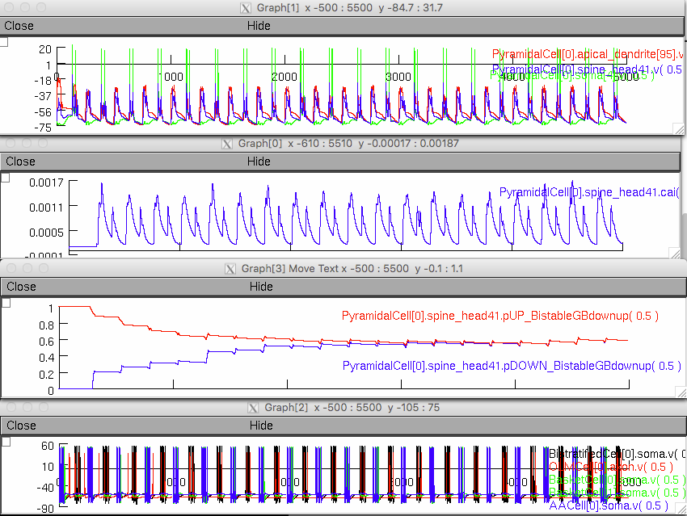

This is the readme for the model associated with the paper: Saudargiene A, Cobb S, Graham BP. A computational study on plasticity during theta cycles at Schaffer collateral synapses on CA1 pyramidal cells in the hippocampus. Hippocampus 2015;25(2):208-218. This NEURON code implements a microcircuit of CA1 pyramidal neuron and consists of a detailed model of CA1 pyramidal cell and four types of inhibitory interneurons (basket, bistratified, axoaxonic and oriens lacunosum-moleculare cells). Synaptic plasticity during theta cycles at a synapse in a single spine on the stratum radiatum dendrite of the CA1 pyramidal cell is modeled using a phenomenological model of synaptic plasticity (Graupner and Brunel, 2012). The code is adapted from the Poirazi CA1 pyramidal cell (ModelDB accession number 20212) and the Cutsuridis microcircuit model (ModelDB accession number 123815) Abstract: Cellular activity in the CA1 area of the hippocampus waxes and wanes at theta frequency (4-8Hz) during exploratory behaviour of rats. Perisomatic inhibition onto pyramidal cells tends to be strongest out of phase with pyramidal cell activity, whereas dendritic inhibition is strongest in phase with pyramidal cell activity. Synaptic plasticity also varies across the theta cycle, from strong long-term potentiation (LTP) to long-term-depression (LTD), putatively corresponding to encoding and retrieval phases for information patterns encoded by pyramidal cell activity (Hasselmo et al, 2002a). The mechanisms underpinning the phasic changes in plasticity are not clear, but it is likely that inhibition plays a role by affecting levels of electrical activity and calcium concentration at synapses. We explore the properties of synaptic plasticity at Schaffer collateral synapses on CA1 pyramidal neurons and the influence of spatially and temporally targeted inhibition using a detailed multicompartmental model of the CA1 pyramidal neuron microcircuit and a phenomenological model of synaptic plasticity. The results suggest CA3-CA1 synapses are potentiated on one phase of theta due to high calcium levels provided by paired weak CA3 and layer III entorhinal cortex (EC) inputs even when somatic spiking is inhibited by perisomatic interneuron activity. Weak CA3 inputs alone induce lower calcium transients and result in depression of the CA3-CA1 synapses. These synapses are depressed if activated in phase with dendritic inhibition as strong CA3 inputs alone are not able to cause high calcium in this theta phase even though the CA1 pyramidal neuron shows somatic spiking. Dendritic inhibition acts as a switch that prevents LTP and promotes LTD during the retrieval phases of the theta rhythm in CA1 pyramidal cell. This may be important for not overly reinforcing recalled memories and in forgetting no longer relevant memories. Main file: main.hoc This file reproduces data presented in figures 2-5 of the paper. The parameters of the simulation protocol are defined by the index ind_simulation. Calcium concentration and synaptic efficacy variables in a SR spine start evolving at t=250ms to allow a network to fully establish its activity. Data is written in the files (* indicates the index of the simulation protocol): results_exp*.dat rasterCA3_exp*.dat rasterEC_exp*.dat Usage: ------ Auto-launch the model from ModelDB (if your browser is configured for this) or download and extract these files, compile the mod files (with nrnivmodl, (unix/linux) or mknrndll (mac/windows)). For more help on running the model see https://senselab.med.yale.edu/ModelDB/NEURON_DwnldGuide.html Under unix/linux start the simulation with command nrngui mosinit.hoc Under windows double click the mosinit.hoc file Under mac os X either use the unix/linux instructions or drag and drop the mosinit.hoc to the nrngui icon. Once the simulation starts it will run with ind_simulation=1 which corresponds to figure 2 in the paper. It takes 7 minutes to generate on a 2012 macbook pro (or 5 1/2 minutes if you hide (click hide on) the figures while it is running): 